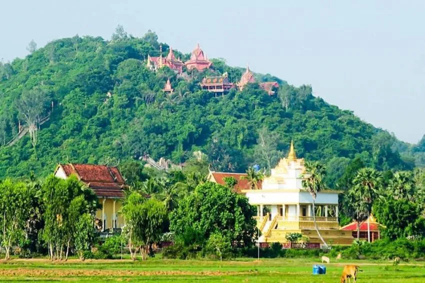

អំពីខេត្តព្រៃវែង
ខេត្តព្រៃវែង ស្ថិតនៅភាគអាគ្នេយ៍នៃព្រះរាជាណាចក្រកម្ពុជា និងជាខេត្តដែលមានវាលស្រែធំៗ និងដីមានជីជាតិល្អសម្រាប់កសិកម្ម។ ប្រជាជនភាគច្រើនប្រកបរបរកសិកម្ម ជាពិសេសការដាំស្រូវ ដែលធ្វើឱ្យខេត្តនេះមានតួនាទីសំខាន់ក្នុងការផ្គត់ផ្គង់អង្កររបស់ប្រទេស។
ប្រវត្តិសង្ខេប
ខេត្តព្រៃវែងមានប្រវត្តិយូរអង្វែង និងធ្លាប់ជាតំបន់សំខាន់ ក្នុងសម័យអាណាចក្រខ្មែរ។ ឈ្មោះ “ព្រៃវែង” មកពីព្រៃធំទូលាយដែលធ្លាប់គ្របដណ្តប់តំបន់នេះ។ បច្ចុប្បន្ន ខេត្តនេះបានអភិវឌ្ឍលើវិស័យកសិកម្ម អប់រំ និងហេដ្ឋារចនាសម្ព័ន្ធ។
កន្លែងទេសចរណ៍សំខាន់ៗ
- វត្តព្រៃវែង
- រមណីយដ្ឋានទន្លេមេគង្គ
- សួនច្បារក្រុងព្រៃវែង
- ផ្សារព្រៃវែង
- តំបន់ជនបទវាលស្រែធំៗ
ទីតាំងភូមិសាស្ត្រ
ខេត្តព្រៃវែង ស្ថិតនៅភាគអាគ្នេយ៍នៃប្រទេសកម្ពុជា មានព្រំប្រទល់ជាប់ខេត្តកណ្តាល និងខេត្តស្វាយរៀង ព្រមទាំងជាប់ប្រទេសវៀតណាម។ ខេត្តនេះមានទន្លេមេគង្គហូរកាត់ ដែលជួយឱ្យដីមានជីជាតិ និងសមស្របសម្រាប់កសិកម្ម។